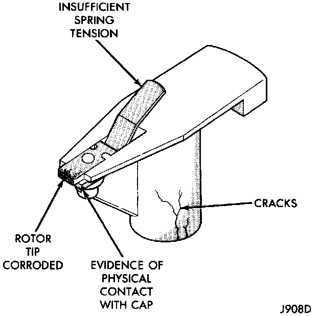

Ignition Rotor: Testing and Inspection
DISTRIBUTOR ROTORFig. 12 Rotor Inspection - Typical:

Visually inspect the rotor (Fig. 12) for cracks, evidence of corrosion or the effects of arcing on the metal tip. Also check for evidence of mechanical interference with the cap. Some charring is normal on the end of the metal tip. The silicone-dielectric- varnish-compound applied to the rotor tip for radio interference noise suppression, will appear charred.
This is normal. Do not remove the charred compound. Test the spring for insufficient tension. Replace a rotor that displays any of these adverse conditions.